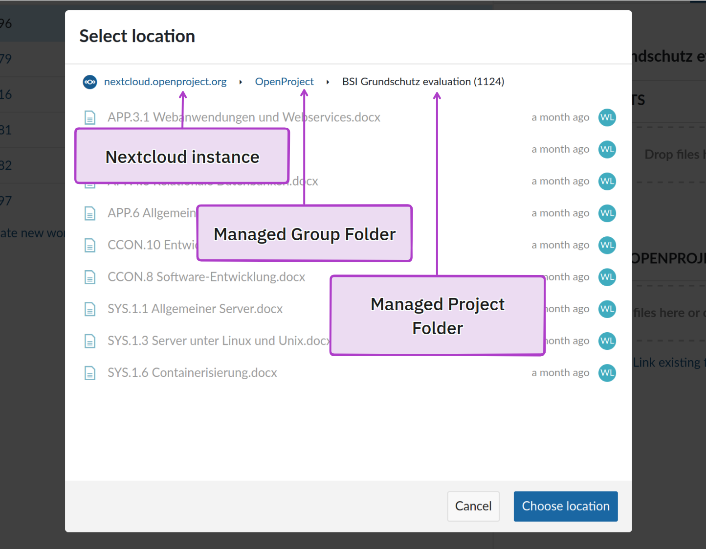

openDesk - The Open Source collaborative suite
Clément Aubin - XWiki
xwiki.com ·
cryptpad.org ·
@caubin:matrix.xwiki.com ·
clement.aubin@xwiki.com
Wieland Lindenthal - OpenProject
OpenProject.org ·
@w.lindenthal:openproject.org ·
@wielinde@fosstodon.org
The biggest opportunity for OSS
openDesk is a powerful initiative of the German government with the goal to provide a serious alternative to the proprietary Big Tech establishment. It unites independent open source software vendors to create a sovereign work place, tailored for the public sector.
Who are we?
- Software engineer
- Technical co-founder of OpenProject
- XWiki Committer
- Sales & Professional services @ XWiki
Sovereign workplaces in western EU
2015 - 2020: Growing concerns regarding US-based cloud offerings
- Lack of control
- Privacy risks (US Cloud Act in 2018)
- Lock-in
Sovereignty & and security constraints
2020+: Inception of global strategies for sovereign clouds
- France 🇫🇷 : Cloud Nubo & Cloud π
- Germany 🇩🇪 : Deutsche Verwaltungscloud-Strategie (DVS)
Sovereignty & and security constraints
Creation of security standards owned by governments (ANSSI SecNumCloud / BSI C5)
- Ensures software quality and prevent extraterritoriality
- Long term vision: one unified standard in the EU, ESCloud
Strategies for developing sovereign collaborative suites
France and Germany have two approaches to this problem.
- France 🇫🇷 : Financing of 3 private consortiums from 2023 to 2026 - 23M€ total
- Germany 🇩🇪 : One project, openDesk built form open source solutions - 23M€ in 2023
openDesk
- Initiative of ZenDiS, Center for digital sovereignty
- Financing from the German Federal Ministry of the Interior and Community (BMI).
- Project co-managed with BMI / PWC / Dataport / Bechtle
- Integration of vendors for developing new features
- 500+ participants in 2023
A digital work place

Vendors
Hosting offered by Dataport
openDesk - Architecture
- Deployment on Kubernetes based on Helm charts
-
Each vendor provide a different packaging method
- Generic Docker image, with a dedicated configuration
- Custom Docker image for openDesk
- Application embedded in a generic openDesk container
openDesk - Architecture
- Unified user directory, managed by Univention
- OpenID Connect authentication on every component
- Unified navigation menu across applications
- Deep integrations between applications (e.g. files, contacts, calendars, tasks,...)
openDesk - Distribution & High standards
- All sources are mirrored to OpenCoDE (GitLab)
- Provisioning as HELM charts
- Integration of signed SBOMs + licences audit
- Audit of every component to qualify the suite for BSI C5
- Accessibility and UX audits
- Security audits and certifications
- Install documentation, mainly in German
openDesk - Offerings
- ZenDiS: professional support for Germany's public sector
- Dataport: Hosting dPhoenixSuite, a fork of openDesk with proprietary components
- Current professional offers mainly for the German market
✨ Demo ✨
openDesk - Roadmap
First stable version available in February 2024
- Includes every app you saw in the demo:)
During 2024
- Functional improvements to improve BSI C5 compliance
- Improvements for UI / UX coherency
A big opportunity for vendors
- Simplified procurement
- Access to a huge market
- Trust in the software
- Multiplying value through deep integrations
- Focus on own strengths
Also challenges
- UI/UX integration:Â need for each vendor to create an "openDesk" theme
- Features overlap between vendors
- Maintenance of the customization outside of the core
- Wide range of (contradicting) business models
-
Offerings
- In Germany 🇩🇪
- In the EU 🇪🇺!
Example
Deep integration of Nextcloud and OpenProject
Nextcloud is mainly a file storage platform
OpenProject is a collaborative project management system
Real challenges for an organisation
- Problem 1: "Where are the files for my task?"
- Problem 2: "Does everyone in my team have access?"
- Problem 3: "I want similar projects to easily follow the same structure"
Integration wins over feature duplication
- OpenProject has very basic file management, e.g. attachments
- Nextcloud has very basic task management, e.g Deck
- Integration allows to focus on each others core strengths
- Integration also outside of openDesk of great value
- Deep integration also in sales
In OpenProject: Show relevant files/folders for a work package
In OpenProject: Share access by saving files in the project folder
In Nextcloud: Link a file/folder to a work package
Project templates improve quality and speed
- Provide template task list
- with related template files
- in a template folder structure.
Integrated we are stronger
Clément Aubin - XWiki
xwiki.com ·
cryptpad.org ·
@caubin:matrix.xwiki.com ·
clement.aubin@xwiki.com
Wieland Lindenthal - OpenProject
OpenProject.org ·
@w.lindenthal:openproject.org ·
@wielinde@fosstodon.org